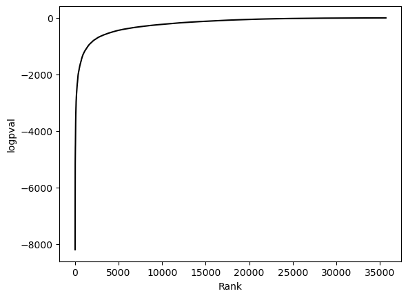
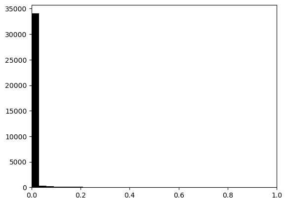

Analysis of Human Cell Atlas of Fetal Gene Expression
[1]:
import scanpy as sc
import singleCellHaystack as hs
sc.settings.set_figure_params(dpi=150, facecolor='white')
Here we show how singleCellHaystack can handle very large datasets. For this we use the Human Cell Atlas of Fetal Gene Expression dataset with ~4 million cells.
Load data
Reading the loom file is very slow and memory costly. It is better to do this independently and export the data in h5ad format.
[2]:
%%time
#adata = sc.read_loom("data/GSE156793_S3_gene_count.loom")
adata = sc.read_h5ad("output/adata.h5ad")
adata
CPU times: user 17.7 s, sys: 16.3 s, total: 34.1 s
Wall time: 36.6 s
[2]:
AnnData object with n_obs × n_vars = 4062980 × 63561
obs: 'All_reads', 'Assay', 'Batch', 'Development_day', 'Exon_reads', 'Experiment_batch', 'Fetus_id', 'Intron_reads', 'Main_cluster_name', 'Main_cluster_umap_1', 'Main_cluster_umap_2', 'Organ', 'Organ_cell_lineage', 'RT_group', 'Sex', 'Size_Factor', 'batch', 'obs_names', 'sample'
var: 'exon_intron', 'gene_id', 'gene_short_name', 'gene_type', 'index', 'var_names'
uns: 'Main_cluster_name_colors'
obsm: 'X_umap'
Filter genes
We remove genes expressed in less than 100 cells.
[3]:
sc.pp.filter_genes(adata, min_cells=100)
adata
[3]:
AnnData object with n_obs × n_vars = 4062980 × 35686
obs: 'All_reads', 'Assay', 'Batch', 'Development_day', 'Exon_reads', 'Experiment_batch', 'Fetus_id', 'Intron_reads', 'Main_cluster_name', 'Main_cluster_umap_1', 'Main_cluster_umap_2', 'Organ', 'Organ_cell_lineage', 'RT_group', 'Sex', 'Size_Factor', 'batch', 'obs_names', 'sample'
var: 'exon_intron', 'gene_id', 'gene_short_name', 'gene_type', 'index', 'var_names', 'n_cells'
uns: 'Main_cluster_name_colors'
obsm: 'X_umap'
Preprocess
[4]:
%%time
sc.pp.normalize_total(adata, target_sum=1e4)
sc.pp.log1p(adata)
CPU times: user 33.5 s, sys: 2.81 s, total: 36.3 s
Wall time: 36.3 s
[5]:
%%time
sc.pp.highly_variable_genes(adata, min_mean=0.0125, max_mean=3, min_disp=0.5)
sc.pl.highly_variable_genes(adata)
CPU times: user 47 s, sys: 13.4 s, total: 1min
Wall time: 50.8 s
[6]:
adata.raw = adata
[7]:
adata = adata[:, adata.var.highly_variable]
[8]:
%%time
sc.pp.scale(adata, max_value=10)
sc.tl.pca(adata, svd_solver='arpack', n_comps=100)
sc.pl.pca_variance_ratio(adata, n_pcs=100, log=True)
/Users/diez/miniconda3/envs/scanpy/lib/python3.10/site-packages/scanpy/preprocessing/_simple.py:843: UserWarning: Received a view of an AnnData. Making a copy.
view_to_actual(adata)

CPU times: user 9h 24min 44s, sys: 15min 6s, total: 9h 39min 50s
Wall time: 25min 50s
[9]:
%%time
sc.pp.neighbors(adata, n_pcs=50)
sc.tl.umap(adata)
sc.pl.umap(adata)
/Users/diez/miniconda3/envs/scanpy/lib/python3.10/site-packages/umap/spectral.py:342: UserWarning: Exited at iteration 20 with accuracies
[0.01355775 0.01357453 0.01446526]
not reaching the requested tolerance 1e-08.
Use iteration 21 instead with accuracy
0.013865846475387812.
eigenvalues, eigenvectors = scipy.sparse.linalg.lobpcg(
/Users/diez/miniconda3/envs/scanpy/lib/python3.10/site-packages/umap/spectral.py:342: UserWarning: Exited postprocessing with accuracies
[0.01355775 0.01357453 0.01446526]
not reaching the requested tolerance 1e-08.
eigenvalues, eigenvectors = scipy.sparse.linalg.lobpcg(
/Users/diez/miniconda3/envs/scanpy/lib/python3.10/site-packages/scanpy/plotting/_tools/scatterplots.py:392: UserWarning: No data for colormapping provided via 'c'. Parameters 'cmap', 'norm' will be ignored
cax = scatter(
CPU times: user 2h 39min 8s, sys: 5min 54s, total: 2h 45min 2s
Wall time: 1h 45min 3s
[10]:
%%time
sc.tl.leiden(adata)
sc.pl.umap(adata, color="leiden", legend_loc="on data")
/Users/diez/miniconda3/envs/scanpy/lib/python3.10/site-packages/scanpy/plotting/_tools/scatterplots.py:392: UserWarning: No data for colormapping provided via 'c'. Parameters 'cmap' will be ignored
cax = scatter(
CPU times: user 6h 49min 54s, sys: 7min 32s, total: 6h 57min 27s
Wall time: 6h 56min 7s
We use the raw attribute so that we can test all genes.
[11]:
adata_raw = adata.raw.to_adata()
adata_raw
[11]:
AnnData object with n_obs × n_vars = 4062980 × 35686
obs: 'All_reads', 'Assay', 'Batch', 'Development_day', 'Exon_reads', 'Experiment_batch', 'Fetus_id', 'Intron_reads', 'Main_cluster_name', 'Main_cluster_umap_1', 'Main_cluster_umap_2', 'Organ', 'Organ_cell_lineage', 'RT_group', 'Sex', 'Size_Factor', 'batch', 'obs_names', 'sample', 'leiden'
var: 'exon_intron', 'gene_id', 'gene_short_name', 'gene_type', 'index', 'var_names', 'n_cells', 'highly_variable', 'means', 'dispersions', 'dispersions_norm'
uns: 'Main_cluster_name_colors', 'log1p', 'hvg', 'pca', 'neighbors', 'umap', 'leiden', 'leiden_colors'
obsm: 'X_umap', 'X_pca'
obsp: 'distances', 'connectivities'
We set the gene symbols as index, so that they will be included in the haystack results.
[12]:
adata_raw.var["index"]=list(map(str, adata_raw.var.gene_short_name.to_list()))
adata_raw.var=adata_raw.var.set_index("index")
adata_raw.var
[12]:
| exon_intron | gene_id | gene_short_name | gene_type | var_names | n_cells | highly_variable | means | dispersions | dispersions_norm | |
|---|---|---|---|---|---|---|---|---|---|---|
| index | ||||||||||
| WASH7P | exon | ENSG00000227232.4 | WASH7P | pseudogene | ENSG00000227232.4 | 1719 | False | 0.005195 | 3.152367 | 0.433195 |
| RP11-34P13.7 | exon | ENSG00000238009.2 | RP11-34P13.7 | lincRNA | ENSG00000238009.2 | 2492 | False | 0.005935 | 2.904171 | -0.624707 |
| CICP27 | exon | ENSG00000233750.3 | CICP27 | pseudogene | ENSG00000233750.3 | 476 | False | 0.001367 | 2.950321 | -0.427997 |
| AL627309.1 | exon | ENSG00000237683.5 | AL627309.1 | protein_coding | ENSG00000237683.5 | 4140 | True | 0.016144 | 3.347481 | 1.264840 |
| RP11-34P13.15 | exon | ENSG00000268903.1 | RP11-34P13.15 | pseudogene | ENSG00000268903.1 | 197 | False | 0.000877 | 3.482546 | 1.840537 |
| ... | ... | ... | ... | ... | ... | ... | ... | ... | ... | ... |
| RNA28S5 | exon | ENSG00000266658.2 | RNA28S5 | rRNA | ENSG00000266658.2 | 902875 | False | 1.680279 | 3.473712 | 0.144642 |
| AL592170.1 | exon | ENSG00000233094.2 | AL592170.1 | protein_coding | ENSG00000233094.2 | 131 | False | 0.000289 | 2.926089 | -0.531284 |
| ZNF84 | exon | ENSG00000218497.3 | ZNF84 | protein_coding | ENSG00000218497.3 | 147 | False | 0.000392 | 3.225180 | 0.743549 |
| AL603926.1 | exon | ENSG00000229631.2 | AL603926.1 | protein_coding | ENSG00000229631.2 | 4936 | False | 0.012115 | 2.908165 | -0.607682 |
| CU459201.1 | exon | ENSG00000251180.2 | CU459201.1 | protein_coding | ENSG00000251180.2 | 163 | False | 0.000411 | 2.841433 | -0.892118 |
35686 rows × 10 columns
Run haystack
[13]:
%%time
res = hs.haystack(adata_raw, "pca")
> starting haystack ...
> entering array method ...
> scaling coordinates ...
> calculating feature stds ...
> calculating grid points ...
> calculating distance to cells ...
> calculating densities ...
> calculating Q dist ...
> calculating KLD for 35686 features ...
100%|██████████████████████████████████████████████████████████████████████████████████████████████████████████████████████████████████████| 35686/35686 [41:49<00:00, 14.22it/s]
> calculating feature's CV ...
> selecting genes to randomize ...
> calculating randomized KLD ...
100%|████████████████████████████████████████████████████████████████████████████████████████████████████████████████████████████████████████| 100/100 [1:26:16<00:00, 51.77s/it]
> calculating P values ...
> done.
CPU times: user 15h 7min 37s, sys: 1d 2h 37min 17s, total: 1d 17h 44min 55s
Wall time: 3h 38min 14s
[14]:
hs.plot_rand_fit(res, "mean")
hs.plot_rand_fit(res, "sd")


[15]:
hs.plot_pval_rank(res)
hs.plot_pval_hist(res)


[16]:
sum = res["results"]
sum.head(10)
[16]:
| gene | KLD | pval | pval_adj | logpval | logpval_adj | |
|---|---|---|---|---|---|---|
| 19880 | MALAT1 | 0.000011 | 0.0 | 0.0 | -8204.908347 | -8200.355849 |
| 16291 | PTPRD | 0.000123 | 0.0 | 0.0 | -8133.804309 | -8129.251811 |
| 13709 | AUTS2 | 0.000050 | 0.0 | 0.0 | -7864.983675 | -7860.431177 |
| 3996 | NRXN1 | 0.000099 | 0.0 | 0.0 | -7552.591193 | -7548.038695 |
| 6733 | ROBO2 | 0.000128 | 0.0 | 0.0 | -7056.877873 | -7052.325375 |
| 12169 | BAI3 | 0.000103 | 0.0 | 0.0 | -6534.973548 | -6530.421050 |
| 8452 | LPHN3 | 0.000097 | 0.0 | 0.0 | -5932.948257 | -5928.395759 |
| 6943 | LSAMP | 0.000162 | 0.0 | 0.0 | -5924.083997 | -5919.531500 |
| 29615 | DLGAP1 | 0.000110 | 0.0 | 0.0 | -5834.298885 | -5829.746387 |
| 22249 | ANKS1B | 0.000108 | 0.0 | 0.0 | -5747.931987 | -5743.379489 |
[17]:
genes = sum.head(11).gene.tolist()
genes
[17]:
['MALAT1',
'PTPRD',
'AUTS2',
'NRXN1',
'ROBO2',
'BAI3',
'LPHN3',
'LSAMP',
'DLGAP1',
'ANKS1B',
'SYT1']
[18]:
sc.pl.umap(adata_raw, color=["leiden"] + genes, color_map="Spectral_r", legend_loc=None, sort_order=False)
/Users/diez/miniconda3/envs/scanpy/lib/python3.10/site-packages/scanpy/plotting/_tools/scatterplots.py:392: UserWarning: No data for colormapping provided via 'c'. Parameters 'cmap' will be ignored
cax = scatter(